Evidencing
You must produce a document for your controlled assessment to show how you have completed the programming task.
How it is marked
The controlled assessment is out of 40 marks and is broken into five sections, these are:
- Programming Techniques (12 marks) - creating a working solution to the problem
- Analysis (6 marks) - breaking down the task down, working out what it needs to do
- Design (8 marks) - planning how you are going to solve the problem and test it, this includes algorithms
- Development (8 marks) - showing how you solved the problem and how you developed it bit by bit, also showing how you tested it as you made it.
- Testing, Evaluation & Conclusions (6 marks) - testing your finished solution thoroughly to show it work, writing a conclusion against the success criteria.
The information below gives you pointers and hints about what to include in your report, use this information carefully to ensure you include everything you need to.
Analysis Section
This should include:
- an explanation of the task that you need to complete, saying what it will need to do
- a break down of the main task, listing the smaller sub-tasks
Process of Success
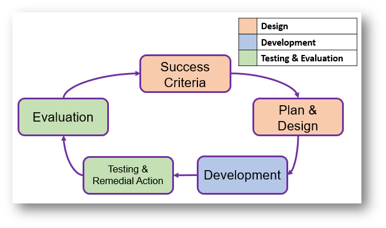
Each sub-task identified in the analysis should follow the process of success and be broken down into three key sections, these are design, development and testing.
Design Section
This should include:
- Success Criteria - a list of success criteria for the requirement.
- Approach to be Used - this should include an explanation of the programming techniques you will use to complete the task.
- IPOD table - showing the inputs, processes, outputs and decisions that will be needed.
- Variables to be Used - this should include the data type and what each one will be used for.
- Validation to be Used - this should explain the different validation that could/will be added to the solution.
- Pseudocode & Flowchart of the solution to be created.
- Test plan - this should detail the tests that will be carried out after development.
Development Section
This should include:
- explanation showing how you developed the code bit by bit to get to your finished solution.
- screenshots and evidence of problems you had and changes you made to solve them.
- screenshots and evidence of any tests you carried out as you developed the program to test that sections were working.
- full annotation of the final code with screenshots of it.
Testing Section
- Test plan has been fully completed with screenshots showing the tests being carried out.
- If any tests failed, these should be corrected and re-tested.
- Evaluation of your solution against the success criteria, explaining how you have met each one.
Design Section Support
Variables to be Used
Create a table that lists all of the variable names, their data types and what they will be used for, an example is shown below:
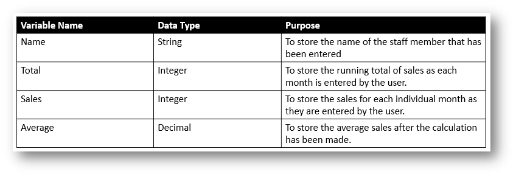
IPOD Table
The IPOD table will help break down the task by identifying the inputs, processes, outputs and decisions. You could write it as a list or use a table like the example below:
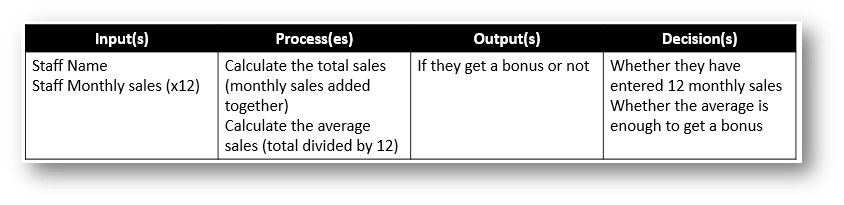
Validation to be Used
Make a list of the different validation you will try to include in your solution to prevent invalid input. You can either make this as a set of bullet points or use a table like the example below:
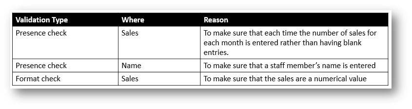
Pseudocode
You need to develop pseudocode to show the design of your algorithm, below is the pseudocode guide supplied by OCR to help you.
Variables
Variables are assigned using the = operator.
x=3
name=“Bob”
A variable is declared the first time a value is assigned. It assumes the data type of the value it is given.
Variables declared inside a function or procedure are local to that subroutine.
Variables in the main program can be made global with the keyword global.
global userid = 123
Casting
Variables can be typecast using the int str and float functions.
str(3) returns “3”
int (“3.14”) returns 3
float (“3.14”) returns 3.14
Outputting to Screen
print(string/variable)
Example
print("hello")
Taking Input from User
variable=input(prompt to user)
Example
name=input(“Please enter your name”)
Selection
Selection will be carried out with if/else
if entry=="a" then
print("You selected A")
elseif entry=="b" then
print("You selected B")
else
print("Unrecognised selection")
endif
switch/case
switch entry:
case “A”:
print(“You selected A”)
case “B”:
print(“You selected B”)
default:
print(“Unrecognised selection”)
endswitch
Iteration – Count Controlled
for i=0 to 7
print("Hello")
next i
Will print hello 8 times (0-7 inclusive).
Iteration – Condition Controlled
while answer!="computer"
answer=input("What is the password?")
endwhile
do
answer=input("What is the password?")
until answer=="computer"
String Handling
To get the length of a string:
stringname.length
To get a substring:
stringname.subString(startingPosition, numberOfCharacters)
NB The string will start with the 0th character.
Example
someText=”Computer Science”
print(someText.length)
print(someText.substring(3,3))
Will display 16
put
Arrays
Arrays will be 0 based and declared with the keyword array.
array names[5]
names[0]=”Ahmad”
names[1]=”Ben”
names[2]=”Catherine”
names[3]=”Dana”
names[4]=”Elijah”
print(names[3])
Example of 2D array:
Array board[8,8]
board[0,0]=”rook”
Reading to and Writing from Files
To open a file to read from openRead is used and readLine to return a line of text from the file. The following program makes x the first line of sample.txt
myFile = openRead(“sample.txt”)
x = myFile.readLine()
myFile.close()
endOfFile() is used to determine the end of the file. The following program will print out the contents of sample.txt
myFile = openRead(“sample.txt”)
while NOT myFile.endOfFile()
print(myFile.readLine())
endwhile
myFile.close()
To open a file to write to openWrite is used and writeLine to add a line of text to the file. In the program below hello world is made the contents of sample.txt (any previous contents are overwritten).
myFile = openWrite(“sample.txt”)
myFile.writeLine(“Hello World”)
myFile.close()
Subroutines
function triple(number)
return number*3
endfunction
Called from main program
y=triple(7)
procedure greeting(name)
print(“hello”+name)
endprocedure
Called from main program
greeting(“Hamish”)
Flowchart
You also need to create a flowchart when designing your program, use the symbols below to do this:
| Symbol | Description |
|---|---|
| This shapes indicates the start or end of a flowchart | |
| 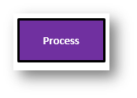 | A rectangular box represents a process, this is doing something. E.g. total = num1+num2 |
| 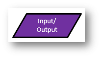 | A parallelogram represents input or output. E.g. Input num1 Output total |
| 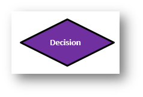 | A diamond shape represents a decision, YES or NO e.g. is it a weekday? |
| 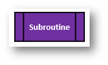 | This can be used to represent a link to a smaller sub-task from a main flowchart |
Test Plan
Use the table layout below when creating your test plan. The test plan should have the Actual Outcome and Pass/Fail left blank until it is completed in the testing section at the end.
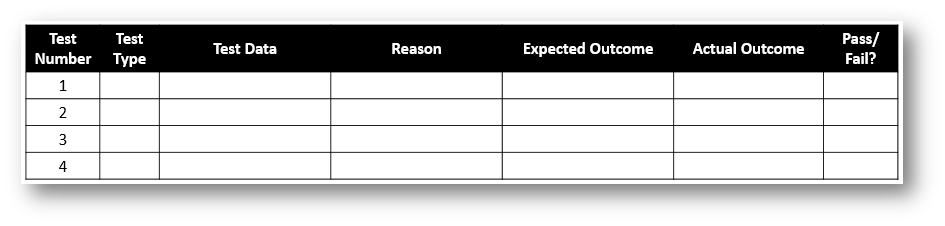
Development Section Support
Annotation of Code
Below are two examples of code annotation, one is a poor example as it doesn’t explain how the code works, it just identifies what sections do very briefly.
Poor Annotation
#user inputs
adults = input("Enter the number of adults: ")
children = input("Enter the number of children: ")
#works out the cost
adulttotal = int(adults) * 5
childtotal = int(children) * 3
grandtotal = adulttotal + childtotal
#displays the cost
print(adults + " adults and " + children + " children will cost a total of £{:.2f}".format(grandtotal))
Good Annotation
#asks the user to input the number of adults and stores it in the adults variable
adults = input("Enter the number of adults: ")
#asks the user to input the number of children and stores it in the children variable
children = input("Enter the number of children: ")
#works out the adult cost by multiplying the number of adults by £5 and storing it in adult total
adulttotal = int(adults) * 5
#works out the child cost by multiplying the number of children by £3 and storing it in child total
childtotal = int(children) * 3
#works out the grand total by adding the adult total to the child total
grandtotal = adulttotal + childtotal
#displays the cost for the number of adults and number of children
print(adults + " adults and " + children + " children will cost a total of £{:.2f}".format(grandtotal))
Testing & Evaluation Section Support
Evaluation
You must evaluate your final program against the success criteria you came up with at the start. You can do this as a series of paragraphs or use the structure below:
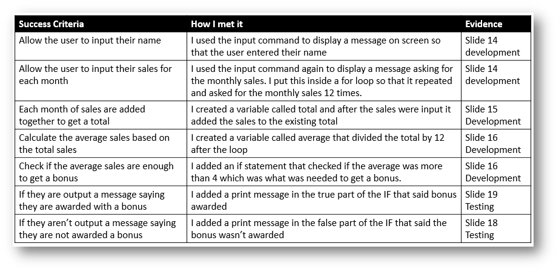
NOTE: You should try to use keywords in your explanations to get the higher marks
Evidence Checklist
Use the checklist below to make sure you have included everything in your report:
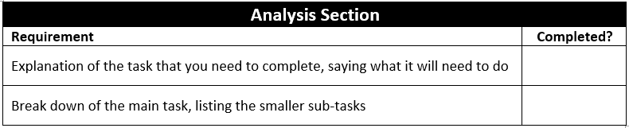
You should complete the following for each of the sub-tasks identified in your analysis.
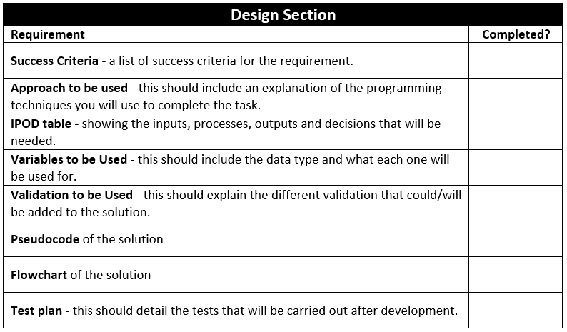
You should complete the following for each of the sub-tasks identified in your analysis.
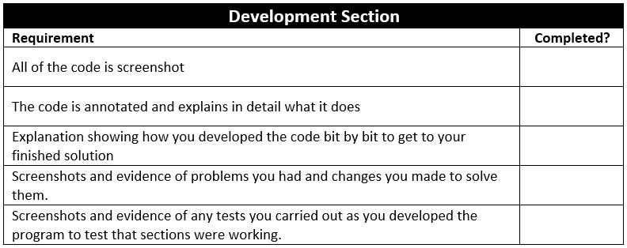
You should complete the following for each of the sub-tasks identified in your analysis.
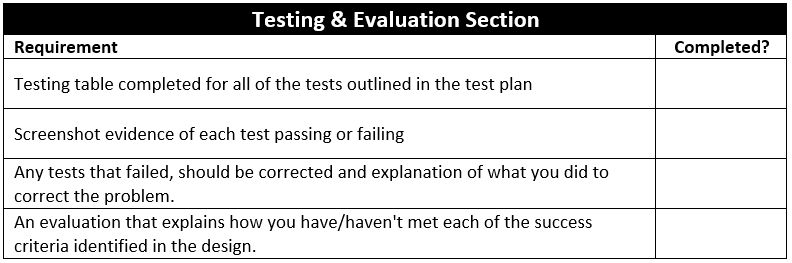
Final Layout Checks
Before your submit your final work make sure you have checked to make sure have done the following:
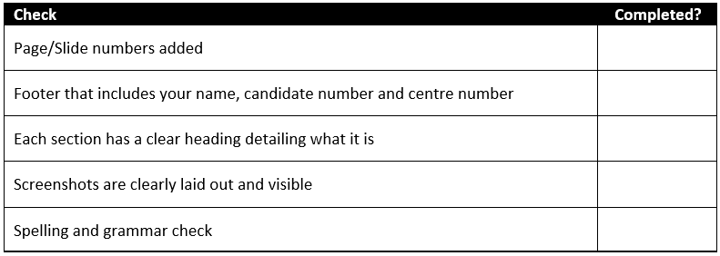
Exemplar Evidence & Marking Criteria
Click on the links below to see exemplar evidence for a made up task and the controlled assessment marking criteria.
The exemplar evidence shows all the sections that you would need to include for the real controlled assessment brief to give you an idea of what to include and how to lay it out.
Click here to view the exemplar NEA evidence.
Click here to view the marking criteria for the controlled assessment.